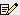
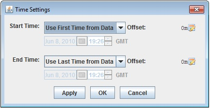
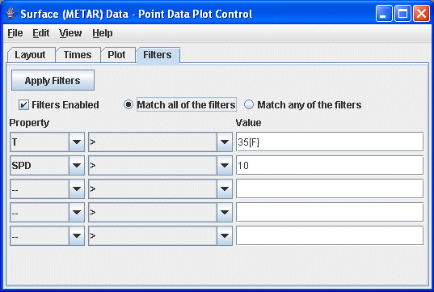

The Point Data Plot Controls show a set of observations using a station model. The control window consists of four tabs. The first tab allows you to control basics of the display:
The second tab allows you to change the observation times that are shown in the display. By default, data for a single time corresponding to the current animation time will be shown. Using this widget allows you to show multiple times at once.
Clicking on  opens a menu that allows you to select specific start and end times.

The third tab provides a time series chart and a data readout table of a selected station. To use this simply click on a station in the main display. Use the Select Fields button to show a dialog that allows you to select what fields are displayed in the table. Double click or right click on a table row to add it to the time series chart. See here for more information about customizing the chart. The File->Save->Save Plot Preferences menu item allows you to save the current set of selected fields and their chart line properties as the default to use for all future point data plots. The View->Show Raw Data menu controls whether the data in the table is formatted or show as raw data. The File->Export Table menu item allows you to export the table as a comma separated value (CSV) file.

The fourth tab allows you to specify a set of visibility filters. See below for further discussion on this.
- Declutter - Click on the Declutter checkbox to see all locations or stations. The display otherwise shows only selected stations that do not overlap. When decluttering is turned on then, as you navigate through the display (e.g., through zooming) then the decluttering will be progressively applied. The small "lock" icon allows you to lock the stations that are currently being displayed and not have their display changed when navigating.
- Density - This slider allows you to change how dense the display of stations is when decluttering.
- Only Show Every - This field allows you to sub-set the data that is being displayed by
only showing every N minutes. For normal observation data (e.g., station
data) this field is not needed. However, for observation data that contains
many times (e.g., airplane track data) you can use this field to subset
the times.
Note: If you are displaying point data that has a large number of times you will be prompted whether you want to view all of the times. If Yes then this is automatically set.
For most of the point data sources you can specify a time binning through the data source properties.
- Layout Model - The Layout model, the choice of data and
layout design for data display at each station, in use is named. Click
on the model name to select other previously-defined
station models, either provided by McIDAS-V or defined by users.
You can change the station model (plot layout), and create new station models, with the Layout Model Editor by clicking on the
 Edit icon.
Edit icon. - Scale - You can scale up or down the size of the displayed elements with this field. Click Apply to make the changes.
- Line Width - Enter in a line width and hit enter or use the
 slider
to choose a value.
slider
to choose a value. - Vertical Position - You can choose to display the locations at their altitude (if there is one) or you can override this and specifically define the vertical position.
- Show - Click to show either individual or multiple times at once.
- Range - Click on the
 Edit icon
to change the range of time and day.
Edit icon
to change the range of time and day. - Declutter - When enabled, allows you to change how often data is displayed based upon time.
- Filters - The Point Data Plot Control provides the ability
to define a set of filters to show or hide particular observations based
on the values they hold.

The above image shows the tab with which you define filters. This image shows two filter expressions, one that states the T field needs to be greater that 35 F, the other states that the SPD value needs to be greater than 10. The unit of the value you enter (e.g., F) is defined with:
[unit_name]
If you do not provide a unit then the comparison is done using the native unit of the observation value.
You can define any number of expressions, disable/enable the filters, and define whether any expression can match or if all expressions must match.